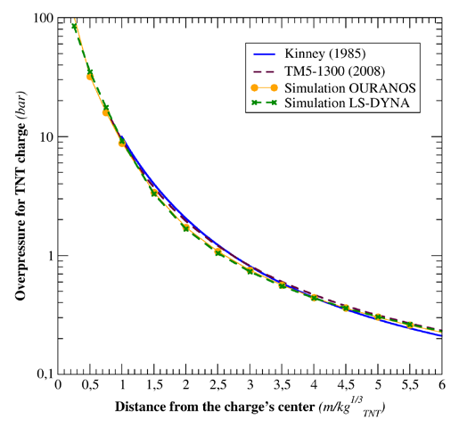
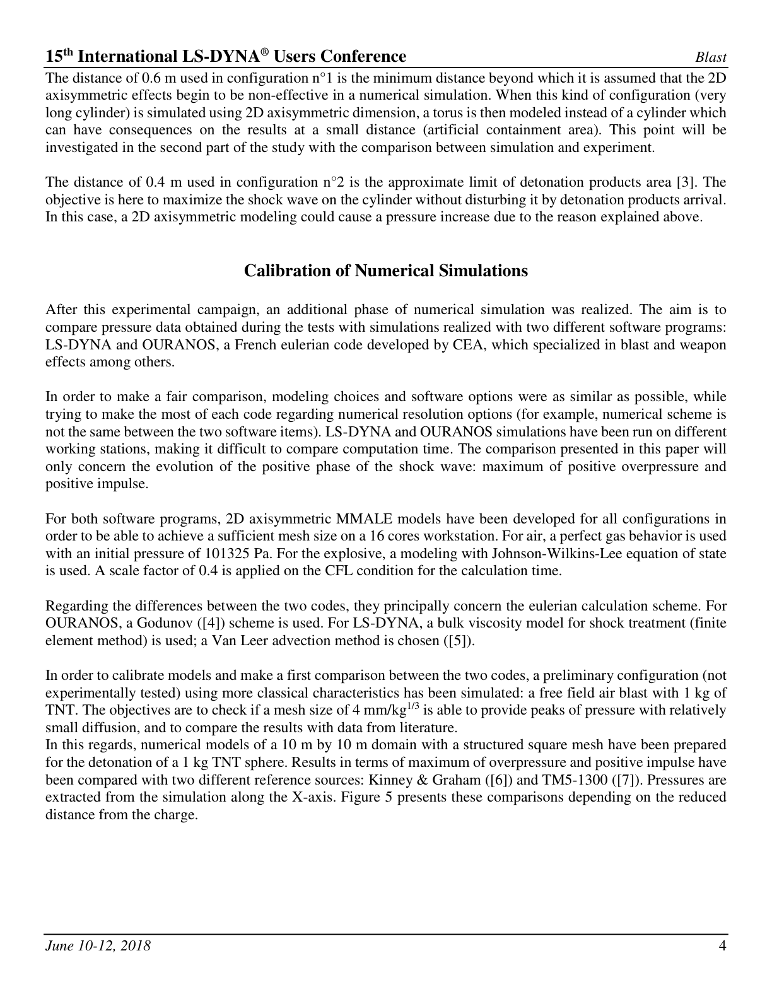
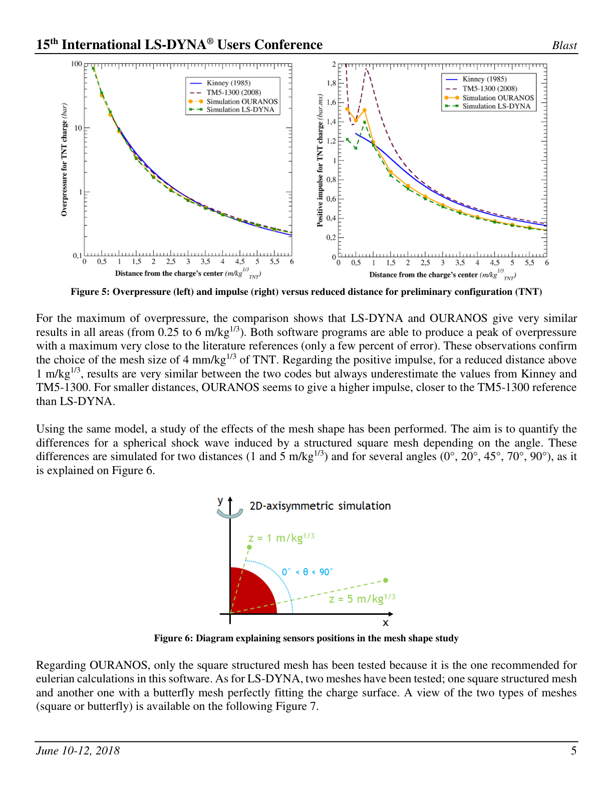

不是实验数据，不替代A02。条件与读数尚未闭合，未建原生输入、未启动仿真、没有APE/MAPE。下表全部为待核对草稿，不能直接用于评分。
完整原始PDF · 全文 · 未具备运行条件的依据 · 全部候选读数草稿
原文PDF4说明：1kg完整TNT球、10×10m域、4mm方形网格、2D轴对称MMALE、空气初压101325Pa、沿X轴取峰值超压；本次没有原文完整TNT JWL／能量参数，也没有原生几何、源表示、轴映射和全窗口契约。图5两条数值曲线分别来自OURANOS和LS-DYNA。
原始内嵌图仅515×480像素。OURANOS的0.25m候选读数只找到1个颜色像素，不能认定是可信标记中心；其余读数也尚未逐项批准。保留全部草稿以便复核，不据此派发或产生误差成绩。

| 数值来源 | 半径m | 候选读数kPa，未批准 | 颜色像素数 | 状态 |
|---|---|---|---|---|
| OURANOS | 0.25 | 9828 | 1 | 不可靠，禁止采用 |
| OURANOS | 0.5 | 3190 | 20 | 候选草稿，未批准 |
| OURANOS | 0.75 | 1596 | 20 | 候选草稿，未批准 |
| OURANOS | 1 | 848.3 | 12 | 候选草稿，未批准 |
| OURANOS | 1.5 | 353.9 | 7 | 候选草稿，未批准 |
| OURANOS | 2 | 180.2 | 8 | 候选草稿，未批准 |
| OURANOS | 2.5 | 112.9 | 10 | 候选草稿，未批准 |
| OURANOS | 3 | 78.48 | 8 | 候选草稿，未批准 |
| OURANOS | 3.5 | 58.47 | 7 | 候选草稿，未批准 |
| OURANOS | 4 | 45.88 | 8 | 候选草稿，未批准 |
| OURANOS | 4.5 | 36.01 | 8 | 候选草稿，未批准 |
| OURANOS | 5 | 28.75 | 9 | 候选草稿，未批准 |
| OURANOS | 5.5 | 24.6 | 5 | 候选草稿，未批准 |
| LS-DYNA | 0.25 | 8557 | 18 | 候选草稿，未批准 |
| LS-DYNA | 0.5 | 3601 | 21 | 候选草稿，未批准 |
| LS-DYNA | 0.75 | 1802 | 19 | 候选草稿，未批准 |
| LS-DYNA | 1 | 933.1 | 18 | 候选草稿，未批准 |
| LS-DYNA | 1.5 | 330.2 | 17 | 候选草稿，未批准 |
| LS-DYNA | 2 | 168.1 | 15 | 候选草稿，未批准 |
| LS-DYNA | 2.5 | 103.5 | 15 | 候选草稿，未批准 |
| LS-DYNA | 3 | 72.59 | 16 | 候选草稿，未批准 |
| LS-DYNA | 3.5 | 55.03 | 16 | 候选草稿，未批准 |
| LS-DYNA | 4 | 43.56 | 14 | 候选草稿，未批准 |
| LS-DYNA | 4.5 | 36.01 | 14 | 候选草稿，未批准 |
| LS-DYNA | 5 | 30.28 | 12 | 候选草稿，未批准 |
| LS-DYNA | 5.5 | 26.14 | 14 | 候选草稿，未批准 |

